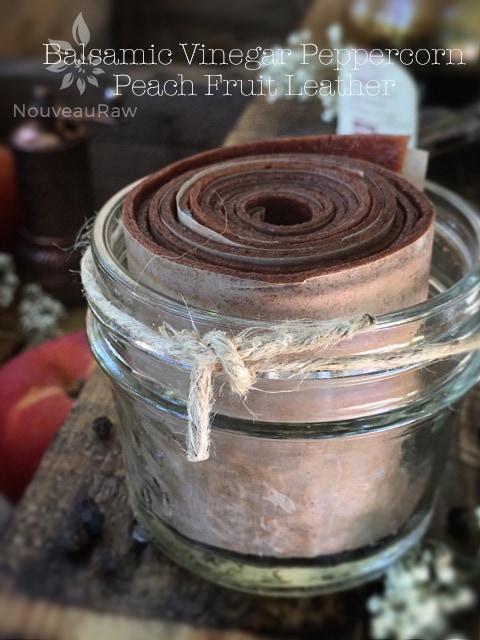

Balsamic Vinegar Peppercorn Peach Fruit Leather

~ raw, vegan, gluten-free, nut-free ~
Do you want to confuse your taste buds? Send them on a guessing game as to just what the heck took place in your mouth? Are you the adventurous type who isn’t afraid to try new flavor sensations? If you answered yes to one or more of these questions, this recipe was made for you. The experience that will take place in your mouth will happen in layers.
You take a bite and with your tongue press the fruit leather to the roof of your mouth. You start to suck on it, and the flavors start to voice themselves. First, comes the peach, it offers up an acidic tang slowly coupled with a twinge of sweetness.
As you continue to savor the bite of fruit leather, you will then get a faint hint of balsamic vinegar. However, this layer of flavor will actually depend on the quality of balsamic that you use. There is a huge difference. Traditional aged balsamic vinegar, produced in the Emilia-Romagna region of Italy, can cost $200 per bottle.
You can walk into any local supermarket and fork over $2 or $3 for a big bottle of balsamic vinegar. Tasted straight from the bottle, there was no contest between the supermarket and traditional balsamic.
Even the best of the commercial brands-while similarly sweet, brown, and vicious—wouldn’t compete with the complex, rich flavor of authentic balsamic vinegar. With notes of honey, fig, raisin, caramel, and wood; a smooth, lingering taste; and an aroma like a fine port, traditional balsamic is good enough to sip like a liqueur. I am not saying that you or I need to pay $200 for vinegar for this recipe to turn out but I just wanted to point out that there is a range of price and the flavor pairs with it.
Then just as you swallow your bite of fruit leather… wait for it, wait for it… the pepper hits you! It really is a neat experience to be had. I hope you give this recipe and try. If you do, please let me know what you think.
Ingredients:
yields 4 cups puree
- 5 cups fresh, sliced peaches
- 2 Tbsp chia seeds, ground in spice grinder
- 3 tsp balsamic vinegar
- 1 1/2 tsp fresh ground black peppercorns
- 1 pinch Himalayan pink salt
Preparation:
- Select RIPE or slightly overripe peaches that have reached a peak in color, texture, and flavor.
- Prepare the peaches; wash, dry, and remove stones.
- Puree the peaches, ground chia, balsamic vinegar, black peppercorns, and salt, in the blender or food processor until smooth. Taste and sweeten if needed. Keep in mind that flavors will intensify as they dehydrate. When adding a sweetener do so 1 tbsp at a time, and reblend, tasting until it is at the desired taste. It is best to use a liquid type sweetener. Don’t use granulated sugar because it tends to change the texture.
- Allow the puree to sit for 10 minutes, so the chia has time to thicken the puree.
- Spread the fruit puree on teflex sheets that come with your dehydrator. Pour the puree to create an even depth of 1/8 to 1/4 inch. If you don’t have teflex sheets for the trays, you can line your trays with plastic wrap or parchment paper. Do not use wax paper or aluminum foil.
- Lightly coat the food dehydrator plastic sheets or wrap with a cooking spray, I use coconut oil that comes in a spray.
- When spreading the puree on the liner, allow about an inch of space between the mixture and the outside edge. The fruit leather mixture will spread out as it dries, so it needs a little room to allow for this expansion.
- Be sure to spread the puree evenly on your drying tray. When spreading the puree mixture, try tilting and shaking the tray to help it distribute more evenly. Also, it is a good idea to rotate your trays throughout the drying period. This will help assure that the leathers dry evenly.
- Dehydrate the fruit leather at 145 degrees (F) for 1 hour, reduce temp to 115 degrees (F) and continue drying for about 16 (+/-) hours. Flip the leather over about halfway through, remove the teflex sheet, and continue drying on the mesh sheet. The finished consistency should be pliable and easy to roll.
- Check for dark spots on top of the fruit leather. If dark spots can be seen it is a sign that it is not completely dry.
- Press down on the fruit leather with a finger. If no indentation is visible or if it is no longer tacky to the touch, the fruit leather is dry and can be removed from the dehydrator.
- Peel the leather from the dehydrator trays or parchment paper. If it peels away easily and holds its shape after peeling, it is dry. If it is still sticking or loses its shape after peeling, it needs further drying.
- Under-dried fruit leather will not keep; it will mold. Over-dried fruit leather will become hard and crack, although it will still be edible and will keep for a long time
- Storage: To store the finished fruit leather…
- Allow the leather to cool before wrapping up to avoid moisture from forming, thus giving it a breeding ground for molds.
- Roll them up and wrap them tightly with plastic wrap. Click (here) to see photos of how I wrap them.
- Place in an air-tight container, and store in a dry, dark place. (Light will cause the fruit leather to discolor.)
- The fruit leather will keep at room temperature for one month, or in a freezer for up to one year.
Culinary Explanations:
- Why do I start the dehydrator at 145 degrees (F)? Click (here) to learn the reason behind this.
- When working with fresh ingredients, it is important to taste test as you build a recipe. Learn why (here).
- Don’t own a dehydrator? Learn how to use your oven (here). I do however truly believe that it is a worthwhile investment. Click (here) to learn what I use.
© AmieSue.com